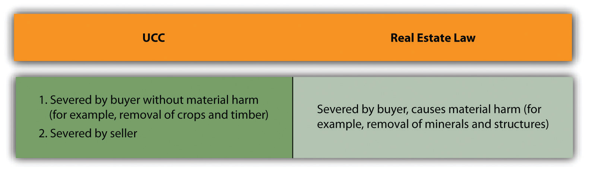

In dealing with any statute, it is of course very important to understand the statute’s scope or coverage.
Article 2 does not govern all commercial transactions, only sales. It does not cover all sales, only the sale of goods. Article 2A governs leases, but only of personal property (goods), not real estate. The Convention on Contracts for the International Sale of Goods (CISG)—kind of an international Article 2—“applies to contracts of sale of goods between parties whose places of business are in different States [i.e., countries]” (CISG, Article 1). So we need to consider the definitions of sale, goods, and lease.
A saleAn arrangement whereby the lessee comes to own the leased goods after the term of the lease for little additional consideration. “consists in the passing of title from the seller to the buyer for a price.”Uniform Commercial Code, Section 2-106.
Sales are distinguished from gifts, bailments, leases, and secured transactions. Article 2 sales should be distinguished from gifts, bailments, leases, and secured transactions. A giftA thing bestowed on another gratuitously as a present. is the transfer of title without consideration, and a “contract” for a gift of goods is unenforceable under the Uniform Commercial Code (UCC) or otherwise (with some exceptions). A bailmentThe rightful possession of goods by one not their owner. is the transfer of possession but not title or use; parking your car in a commercial garage often creates a bailment with the garage owner. A lease (see the formal definition later in this chapter) is a fixed-term arrangement for possession and use of something—computer equipment, for example—and does not transfer title. In a secured transactionA mortgage on personal property so that the creditor may repossess it in case the debtor-owner defaults., the owner-debtor gives a security interest in collateral to a creditor that allows the creditor to repossess the collateral if the owner defaults.
Even if the transaction is considered a sale, the question still remains whether the contract concerns the sale of goods. Article 2 applies only to goods; sales of real estate and services are governed by non-UCC law. Section 2-105(1) of the UCC defines goodsUnder the UCC, all things movable at the time of the contract. as “all things…which are movable at the time of identification to the contract for sale other than the money in which the price is to be paid.” Money can be considered goods subject to Article 2 if it is the object of the contract—for example, foreign currency.
In certain cases, the courts have difficulty applying this definition because the item in question can also be viewed as realty or service. Most borderline cases raise one of two general questions:
The dilemma is this: A landowner enters into a contract to sell crops, timber, minerals, oil, or gas. If the items have already been detached from the land—for example, timber has been cut and the seller agrees to sell logs—they are goods, and the UCC governs the sale. But what if, at the time the contract is made, the items are still part of the land? Is a contract for the sale of uncut timber governed by the UCC or by real estate law?
The UCC governs under either of two circumstances: (1) if the contract calls for the seller to sever the items or (2) if the contract calls for the buyer to sever the items and if the goods can be severed without material harm to the real estate.Uniform Commercial Code, Section 2-107. The second provision specifically includes growing crops and timber. By contrast, the law of real property governs if the buyer’s severance of the items will materially harm the real estate; for example, the removal of minerals, oil, gas, and structures by the buyer will cause the law of real property to govern. (See Figure 17.1 "Governing Law".)
Figure 17.1 Governing Law
Distinguishing goods from services is the other major difficulty that arises in determining the nature of the object of a sales contract. The problem: how can goods and services be separated in contracts calling for the seller to deliver a combination of goods and services? That issue is examined in Section 17.5.1 "Mixed Goods and Services Contracts: The “Predominant Factor” Test" (Pittsley v. Houser), where the court applied the common “predominant factor” (also sometimes “predominate purpose” or “predominant thrust”) test—that is, it asked whether the transaction was predominantly a contract for goods or for services. However, the results of this analysis are not always consistent. Compare Epstein v. Giannattasio, in which the court held that no sale of goods had been made because the plaintiff received a treatment in which the cosmetics were only incidentally used, with Newmark v. Gimble’s, Inc., in which the court said “[i]f the permanent wave lotion were sold…for home consumption…unquestionably an implied warranty of fitness for that purpose would have been an integral incident of the sale.”Epstein v. Giannattasio 197 A.2d 342 (Conn. 1963); Newmark v. Gimble’s, Inc., 258 A.2d 697 (N.J. 1969). The New Jersey court rejected the defendant’s argument that by actually applying the lotion to the patron’s head, the salon lessened the liability it otherwise would have had if it had simply sold her the lotion.
In two areas, state legislatures have taken the goods-versus-services issue out of the courts’ hands and resolved the issue through legislation. Food sold in restaurants is a sale of goods, whether it is to be consumed on or off the premises. Blood transfusions (really the sale of blood) in hospitals have been legislatively declared a service, not a sale of goods, in more than forty states, thus relieving the suppliers and hospitals of an onerous burden for liability from selling blood tainted with the undetectable hepatitis virus.
Section 2A-103(j) of the UCC defines a leaseThe transfer of right of possession and use for a price. as “a transfer of the right to possession and use of goods for a term in return for consideration.” The lessorOne who gives possession of leased goods to another for a price. is the one who transfers the right to possession to the lesseeOne who takes possession of and uses leased goods for a price.. If Alice rents a party canopy from Equipment Supply, Equipment Supply is the lessor and Alice is the lessee.
The UCC recognizes two kinds of leases: consumer leases and finance leases. A consumer leaseA lease of goods by a lessor to a lessee for household uses. is used when a lessor leases goods to “an individual…primarily for personal, family, or household purposes,” where total lease payments are less than $25,000.Uniform Commercial Code, Section 2A-103(e). The UCC grants some special protections to consumer lessees. A finance leaseA lease by a lessor who buys or obtains the goods from a supplier for the purpose of leasing them to a commercial lessee. is used when a lessor “acquires the goods or the right to [them]” and leases them to the lessee.Uniform Commercial Code, Section 2A-103(g). The person from whom the lessor acquires the goods is a supplier, and the lessor is simply financing the deal. Jack wants to lease a boom lift (personnel aerial lift, also known as a cherry picker) for a commercial roof renovation. First Bank agrees to buy (or itself lease) the machine from Equipment Supply and in turn lease it to Jack. First Bank is the lessor, Jack is the lessee, and Equipment Supply is the supplier.
The UCC is, of course, American law, adopted by the states of the United States. The reason it has been adopted is because of the inconvenience of doing interstate business when each state had a different law for the sale of goods. The same problem presents itself in international transactions. As a result, the United Nations Commission on International Trade Law developed an international equivalent of the UCC, the Convention on Contracts for the International Sale of Goods (CISG), first mentioned in Chapter 8 "Introduction to Contract Law". It was promulgated in Vienna in 1980. As of July 2010, the convention (a type of treaty) has been adopted by seventy-six countries, including the United States and all its major trading partners except the United Kingdom. One commentator opined on why the United Kingdom is an odd country out: it is “perhaps because of pride in its longstanding common law legal imperialism or in its long-treasured feeling of the superiority of English law to anything else that could even challenge it.”A. F. M. Maniruzzaman, quoted by Albert H. Kritzer, Pace Law School Institute of International Commercial Law, CISG: Table of Contracting States, accessed March 1, 2011, http://www.cisg.law.pace.edu/cisg/countries/cntries.html.
The CISG is interesting for two reasons. First, assuming globalization continues, the CISG will become increasingly important around the world as the law governing international sale contracts. Its preamble states, “The adoption of uniform rules which govern contracts for the international sale of goods and take into account the different social, economic and legal systems [will] contribute to the removal of legal barriers in international trade and promote the development of international trade.” Second, it is interesting to compare the legal culture informing the common law to that informing the CISG, which is not of the English common-law tradition. Throughout our discussion of Article 2, we will make reference to the CISG, the complete text of which is available online.Pace Law School, “United Nations Convention on Contracts for the International Sale of Goods (1980) [CISG]” CISG Database, accessed March 1, 2011, http://www.cisg.law.pace.edu/cisg/text/treaty.html. References to the CISG are in bold.
As to the CISG’s scope, CISG Article 1 provides that it “applies to contracts of sale of goods between parties whose places of business are in different States [i.e., countries]; it “governs only the formation of the contract of sale and the rights and obligations of the seller and the buyer arising from such a contract,” and has nothing to do “with the validity of the contract or of any of its provisions or of any usage” (Article 4). It excludes sales (a) of goods bought for personal, family or household use, unless the seller, at any time before or at the conclusion of the contract, neither knew nor ought to have known that the goods were bought for any such use; (b) by auction; (c) on execution or otherwise by authority of law; (d) of stocks, shares, investment securities, negotiable instruments or money; (e) of ships, vessels, hovercraft or aircraft; (f) of electricity (Article 2).
Parties are free to exclude the application of the Convention or, with a limited exception, vary the effect of any of its provisions (Article 6).
Article 2 of the UCC deals with the sale of goods. Sale and goods have defined meanings. Article 2A of the UCC deals with the leasing of goods. Lease has a defined meaning, and the UCC recognizes two types of leases: consumer leases and finance leases. Similar in purpose to the UCC of the United States is the Convention on Contracts for the International Sale of Goods, which has been widely adopted around the world.